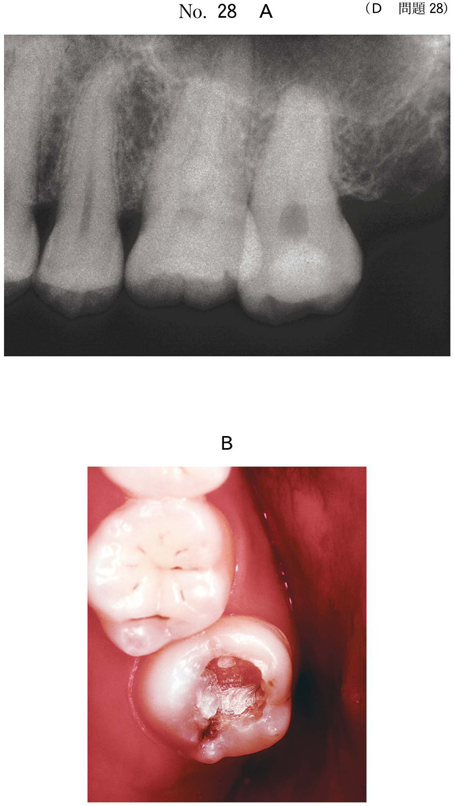
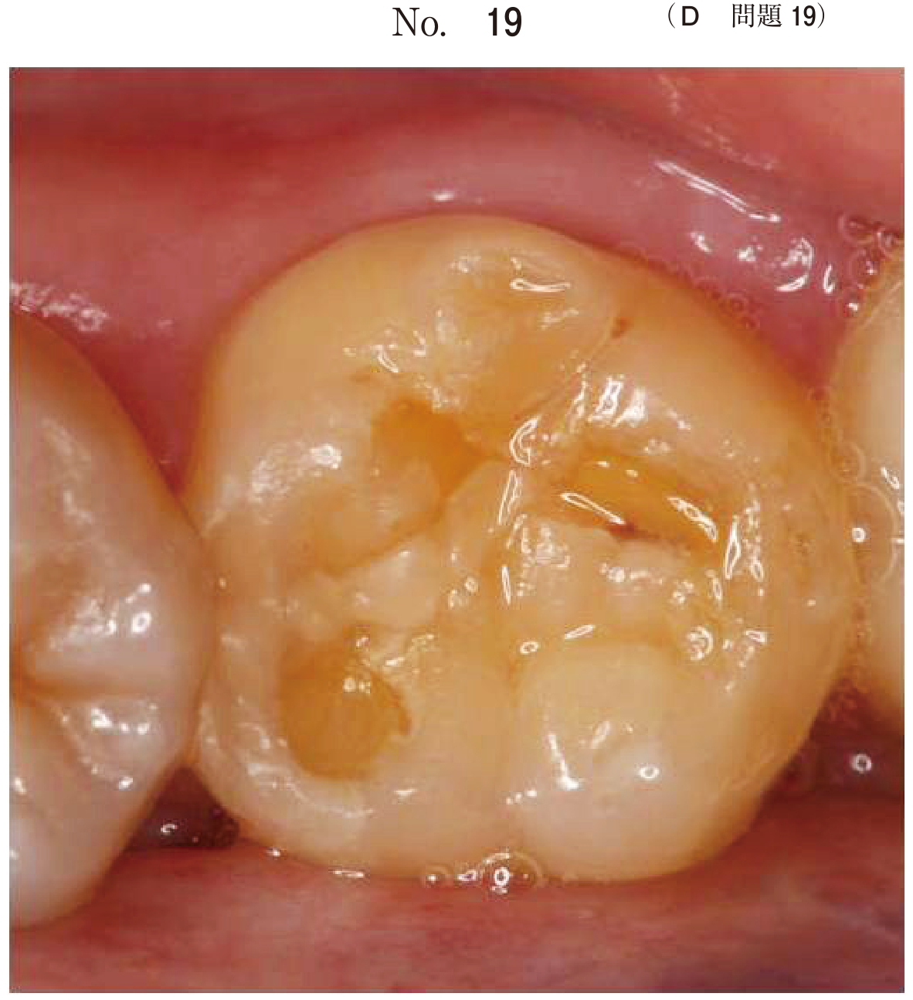
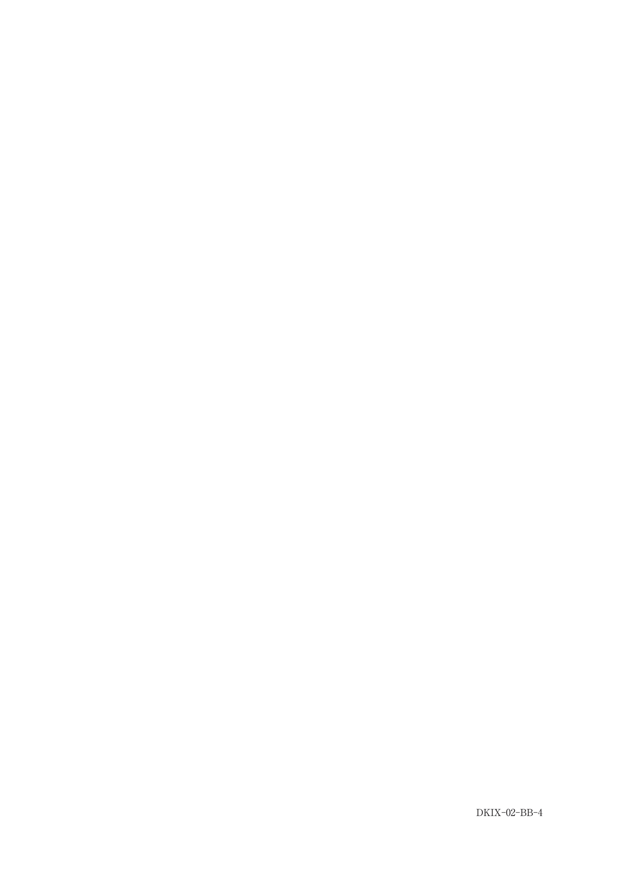

隔壁法
隔壁法とは
複雑窩洞、特に隣接面を含む症例（2級窩洞）に際し、窩洞の単純化をはかる方法。
基本的にはリテーナー、マトリックス、ウェッジを用いる。
隔壁の種類
トッフルマイヤー式マトリックスシステム
- マトリックスリテーナー：バンドを固定
- マトリックスバンド：周径全体を囲む金属バンド
- ウェッジ：歯間分離・マトリックス固定
※主に臼歯部の2級窩洞に使用
セクショナルマトリックスシステム
- リング状リテーナー：マトリックスを固定、接触点回復
- セクショナルマトリックス：隣接面のみをカバー
- ウェッジ：歯間分離・マトリックス固定
※コンタクトの回復に優れる
透明ストリップス
- 前歯部の隣接面（3級窩洞）に使用
- 光透過性があり、光重合に有利
各器具の目的
| 器具 | 目的 |
|---|---|
| マトリックス（隔壁） | 窩洞の単純化、隣接面の外形付与 |
| ウェッジ | 歯間分離、歯間乳頭保護、辺縁適合性の向上、隔壁の厚み補償 |
| リング状リテーナー | セクショナルマトリックスの固定、接触点の確実な回復 |
| 金属マトリックス | 隣接歯保護（窩洞形成時） |
- ① 齲蝕除去・窩洞形成
- ② マトリックスの挿入（104D37）
- ③ ウェッジの挿入
- ④ 歯面処理（接着操作）
- ⑤ コンポジットレジン填塞
- ⑥ 光照射
光導型ウェッジ（透明ウェッジ）
- プラスチック製（透明）
- 歯間分離と同時に、ウェッジ三角面からの光放射によって隣接面歯頸部のレジンを重合硬化できる
圧子
- 解剖学的形態を再現した透明材料
- 窩洞への緊密充填と周囲面との等高平坦化
- 歯頸部窩洞：サービカルマトリックス
過去問で確認
27歳の男性。上顎左側臼歯部の痛みを主訴として来院した。一過性の冷水痛を認める。└5にコンポジットレジン修復を行うこととした。初診時の口腔内写真（別冊No.37A）と罹患歯質除去後の口腔内写真（別冊No.37B）とを別に示す。 次に行うのはどれか。1つ選べ。

b 接着操作
c 裂溝の形成
d 隣接面の予防拡大
e マトリックスの挿入
【解説】隣接面を含む窩洞（2級窩洞）では、罹患歯質除去後にまずマトリックスを挿入して窩洞を単純化する。接着操作はマトリックス挿入後に行う。
28歳の女性。上顎左側小臼歯の冷水痛を主訴として来院した。コンポジットレジン修復を行うこととした。初診時の口腔内写真（別冊No.32A）と齲蝕除去後の口腔内写真（別冊No.32B）とを別に示す。 辺縁適合性を向上させるために使用するのはどれか。1つ選べ。

b ガムリトラクター
c クラウンフォーム
d サービカルマトリックス
e アイボリーセパレーター
【解説】ウッドウェッジは歯間分離だけでなく、マトリックスを歯頸部窩縁に圧接することで辺縁適合性を向上させる。サービカルマトリックスは歯頸部窩洞用の圧子。
36歳の女性。上顎左側臼歯の冷水痛を主訴として来院した。└5にコンポジットレジン修復を行うこととした。初診時の口腔内写真（別冊No.4A）、エックス線写真（別冊No.4B）及び齲蝕除去中の口腔内写真（別冊No.4C）を別に示す。 矢印で示す器具の使用目的はどれか。1つ選べ。

b 防 湿
c 歯間離開
d 歯肉排除
e 隣接歯保護
【解説】窩洞形成中に隣接歯を切削から保護するために金属マトリックスを挿入している。この段階では隔壁としての機能ではなく、隣接歯保護が目的。
46歳の男性。上顎左側第一小臼歯の冷水痛を主訴として来院した。2週前から症状を自覚するようになったという。他の症状は認められない。検査の結果、コンポジットレジン修復を行うこととした。初診時と齲窩の開拡後の口腔内写真（別冊No.24）を別に示す。 処置に使用する器具はどれか。2つ選べ。

b ガムリトラクター
c リング状リテーナー
d アイボリーセパレーター
e サービカルマトリックス
【解説】隣接面を含む窩洞（2級窩洞）のCR修復には、セクショナルマトリックスシステム（リング状リテーナー＋セクショナルマトリックス＋ウェッジ）を使用する。ガムリトラクターは歯肉排除、サービカルマトリックスは歯頸部窩洞用の圧子。
2級コンポジットレジン修復に用いる器具にマトリックスを装着した写真（別冊No.9）を別に示す。 適用される歯（FDI歯式）はどれか。すべて選べ。

b 25
c 35
d 45
e 55
【解説】セクショナルマトリックスの形態から、右側の歯に適用されることがわかる。FDI歯式で15（上顎右側第二小臼歯）、35（下顎左側第二小臼歯）、55（上顎右側第二乳臼歯）が正解。25、45は左側なので不適。